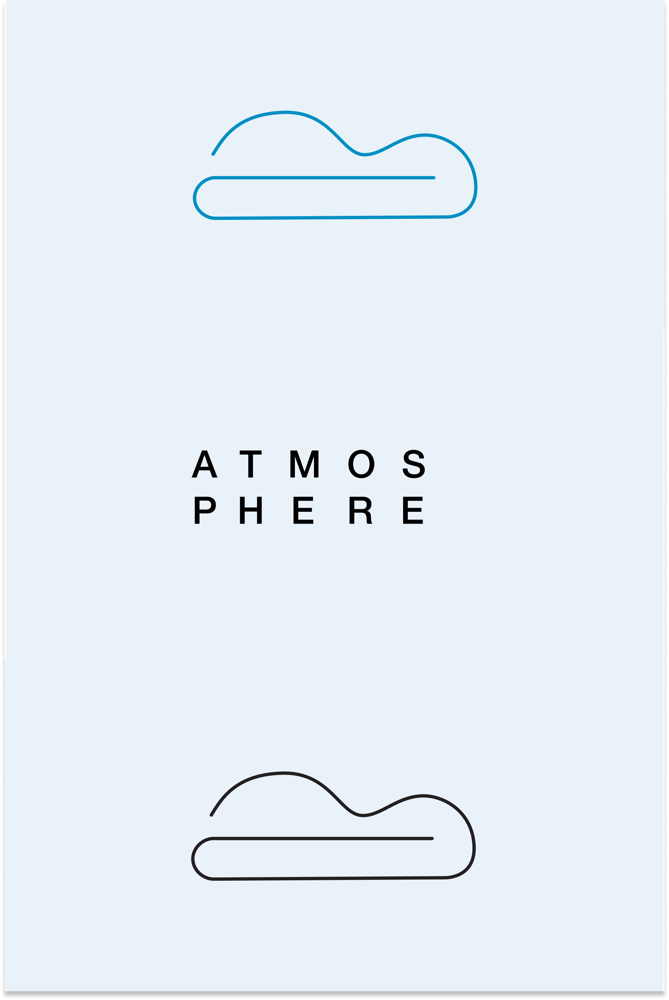
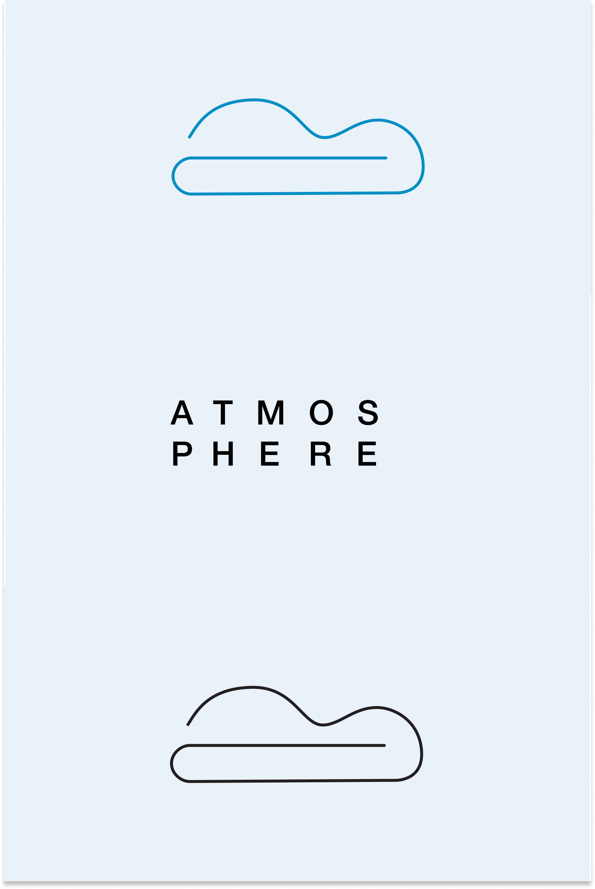

Atmosphere aims to fill the gaps existing in current cloud storage services on the market. We cater to those that actively create and document, while also giving them an environment to communicate and project manage, making it a reliable and clutter-free workspace. Welcome to a cleaner atmosphere.

Design Roles
- UI Design
- UX Design
- Branding and Identity
Design Deliverables
- User Surveys
- Competitive Analysis
- User Stories
- User Flows
- Content Strategy
- User Personas
- Wireframes
- Prototypes
- Usability Testing
- High Fidelity Mock Ups
Specifications
Tools:
- Sketch
- Invision
- Figma
- Usability Hub
Timeline:
- Nov 2018 - Dec 2018
Overview
Problem
I was brought on to create a fresh and new example of cloud storage that would be competitive to the existing platforms. This would mean providing necessary features, but also adding features that would carve out space in the market for the new proposed platform.
Solution
I proposed to create a cloud storage platform catering to students and professionals that create, take a lot of notes, and collaborate. Atmosphere is a platform that organizes your work in three distinct workspaces: a space for all of your various documents and uploads, a space to take and organize your notes, and a space to organize teams and team documents, with the ability to collaborate in real time. The idea is to offer a simple one stop shop with no frills, focusing on making the UI a peaceful and clutter free space that can help you focus on what really matters. I’m working off of the principle of a clear space producing a clear mind.
User Research + Competitive Analysis
Comparing the results of user testing and competitive analysis, I was able to see if the user research confirms the findings discovered through analysis. I found that several things were confirmed, which were the lack of proper project management components in the current platforms was an opportunity to capitalize on, as well as the lack of proper note-taking space.
Key user survey results
100% share files with other people

43% dislike the UI/UX of their current platforms
Note-taking trends:
66% use a notebook
46.7% usenative phone note-taking app
Users project manage mostly via:
66.7% use email
46.7 use cloud storage app and chat app (like Slack)
Competitive Analysis
Drive
- -No solid note-taking integration
- -No project management

Dropbox
- Mainly cloud-storage - no solid note-taking or project management
Evernote
- -Solely for note-taking
- -No other content creation present
Opportunity
What does this mean for me as a designer? I have my two target features that I want to integrate at this time: Project management and robust note taking. This, while keeping in mind a clean and clutter free workspace to optimize efficiency. I can now move forward to confirm that this direction is solid.
User Personas
I developed three personas based off of the two main demographics I found out of surveying, which were students and working professionals (primarily in tech fields).

Wilson Jian
Mechanical engineer, transitioning into web development, dancer
Gender: Male
Location: Queens, NY
Age: 25
"I need to figure out how to keep up with my collaborations"
Frustrations
Wilson is currently using a cloud storage app, a communication app for chatting, and a project management tool that his teams are using to organize the projects. He would really prefer to have everything in one place.
Goals
- Stay organized while working on professional work, self development work, and side projects.
- Not loose track of what’s going on in each project he’s involved in.
Key features determined from user stories
Accessing and adding any and all file types available
Accessing and adding notes
Accessing and adding teams
Organizing files, notes, and teams
Sharing documents with collaborators and others
User Flows


Wireframing
I found the visualization of my findings up to this point was particularly challenging, as there are some robust and well-designed tools already existing on the market. That in mind, I started brainstorming what I could do to differentiate this product from others , while providing solid and easy to use features.
Wireframe Sketches


Wireframes in Sketch


Branding
Another fantastic component of the design process: the stages of branding. Below I have an example of my mind map, a place I love to start to get all my thoughts out on paper so I can determine what ideas I will be using as inspiration for the visuals.
Mind Map and Logo Sketches
Moodboard and Logo Refinement
 

High Fidelity Mockups
Exploration
I have my wireframes.
I have my design system.
Her I began to merge the two, still playing around with layout and colors while I determined how the wireframes and branding fit together.
Version 1 high fidelity mockup

Version 2 high fidelity mockup
Revisions
After iterating a few times, I started to determine what worked and what didn’t. I received feedback from users I was testing, friends, and colleagues.
I learned that my push for a very minimal design was sometimes too minimal for users, so I had to “scale it back.”
I learned that some colors work better than others, and how the layout can direct someone’s attention to the right place.


Preference Testing
Preference testing was a great learning experience is gathering date to make sure the product fits the user best.
Below are some “before and afters” showcasing design decisions based on preference testing.

Version 1 sign up page

Version 2 sign up page, with clearer hierarchy and call to action

Version 1 dashboard page

Version 2 dashboard with users choosing to have the lighter color to have the tabs stand out
Usability Testing and Discoveries
On creating a more welcoming experience
Upon sign up, I was leading people straight into a dashboard that already container documents, and that confused most testers.
In the revision, I included a “welcome” dashboard that didn’t contain anything yet, simulating the actual experience.

On clarifying flow
During the usability test, people found that there was not escape from this screen (and this actually came up once more in another scenario.
I went back and added exit strategies, such as and “x” at the corner.

On reinforcing information
A few users mentioned that they wanted to see feedback about their work being saved. I initially did not have anything to show or tell the user that their work is safe.
I therefore added copy in a highlighted color that says “all changes have been saved” to assure the user all is safe.
Reflections
Below are some thoughts as I look back on the project. I wanted to make sure to I could quantify the exact takeaways, so I can have them readily available for future projects.
What Worked
What really worked throughout the development of this project is setting a clear goal for the user interface as well as the experience.
When I established a compass for how I wanted to users to experience the product, it made the visual and experience design processes that much easier. Not to say that the process was easy necessarily, but it helped to have that compass to come back to any time I made a decision or a change.
I learned to observe other work out there, listen to the users I was testing, as well as professionals critiquing my designs. In the past I have worked primarily on my own, with little feedback. I like that the nature of the process is heavily iterative, and knowing that the ability to iterate will yield the best results.
What Didn't Work
Making assumptions that were not backed by research, as can be assumed, did not work. There were certain design decisions that I implemented and was quite set on, such as layout and color, but as soon as I started preference testing and submitting my work for critique, it was clear that my designs were sometimes too extreme on the side of minimal which I thought looked great, but users felt looked incomplete or unclear.
If Given More Time
I would have spent more time on research. I would seek out more people to take the survey to better gauge what the demographic was lacking in the existing products. I would have loved to spend more time usability testing as well, as I found that I learned so much and gained unique insights from each usability test, so I imagine if I kept going I could have dug deeper into improving the user experience. The best product is simply the one that users enjoy most, so diving deeper into research and getting a better understanding of the user seems like the ultimate way to provide for the user.